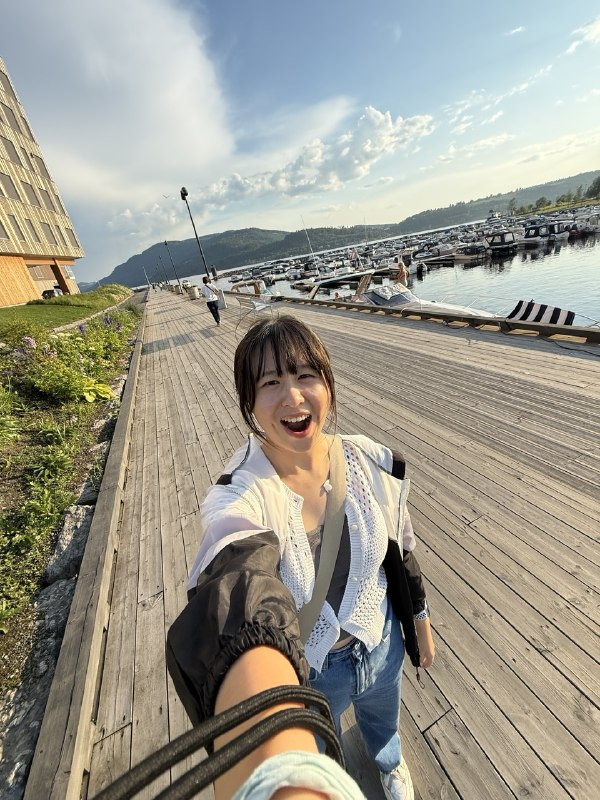
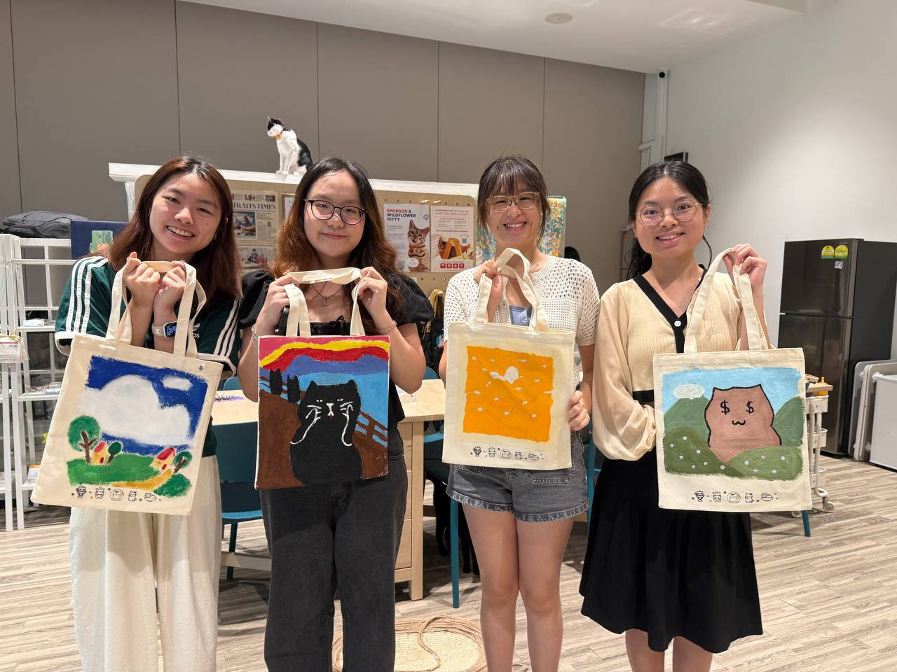
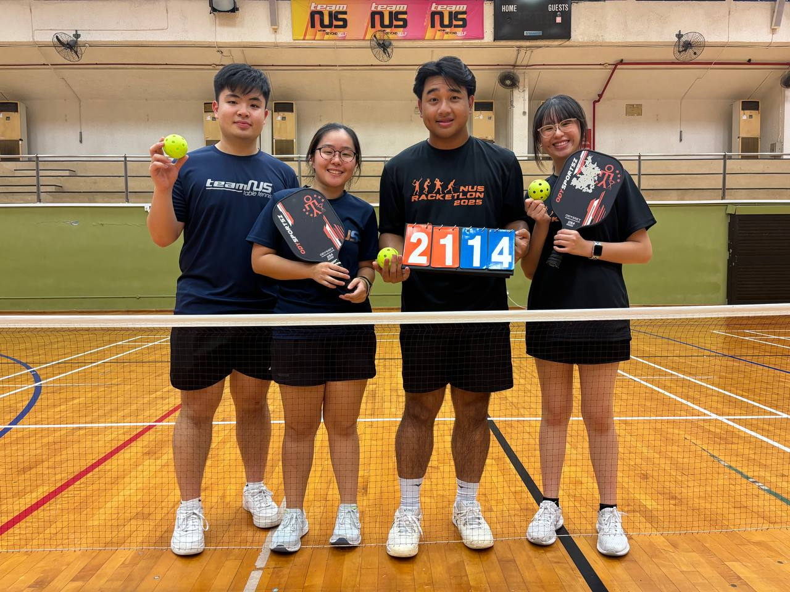

About Me
Design-minded, community-rooted, and curious about useful AI.
As a Business AI Systems student at NUS, I spend a lot of time moving between product thinking, interface design, and community work. I am especially drawn to projects that make everyday workflows easier for people and teams.


